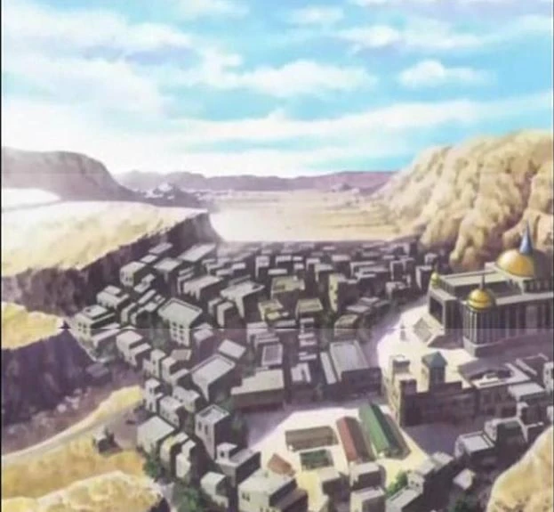
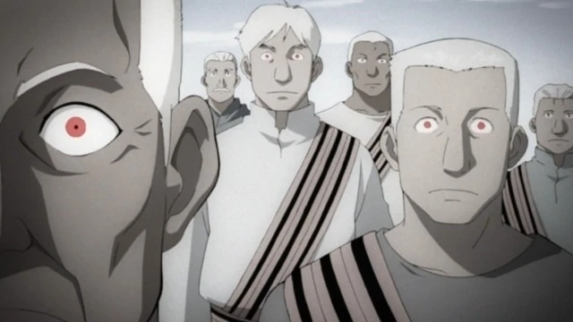

Ishval
Ishval (también escrito como Ishbal) es una región del sudeste de Amestris, en la frontera del desierto oriental. Es de suponer que una vez conformó su propia nación, debido a que las prácticas culturales de las personas Ishval son muy diferentes, y que Ishval fue absorbido probablemente como parte de las políticas de expansión de Amestris. Sin embargo, la región sigue siendo un punto de contención, y fue arrasada en última instancia, como resultado de la Guerra Civil de Ishval.
Descripcion
Existente en la frontera relativamente estéril de Amestris y apenas por debajo del gran desierto que separa a las naciones occidentales del este del continente, Ishval ha sido descrita como una tierra bastante dura hecha de poco más de rocas y arena. No tiene recursos naturales importantes y muy poca tierra cultivable, lo que probablemente explica los estrictos códigos de conducta y sentido de la capacidad de recuperación adoptados por sus habitantes. A pesar de esto, Ishval fue un punto de cruce relativamente popular para los comerciantes y contrabandistas de Xing de cara al oeste. Ishval está dividida en varios distritos diferentes. Gunja, Kanda y Daliha son los únicos nombrados durante la serie.

Se sugiere que los ishvalanos se extendieron previamente a lo largo de un área más amplia, pero que la región más pequeña de Ishval fue creada por el gobierno de Amestris después de los conflictos entre el Gobierno Central y los ishvalanos. Desde la guerra, Ishval se ha convertido en una tierra desolada con sangre y recuerdos de pesadilla empapados profundamente en la arena, mientras que la gente se ha dispersado sobre la nación de Amestris, escondiéndose de la persecución en los guetos. Algunos se han refugiado en el desierto del este dentro de las ruinas de Xerxes.